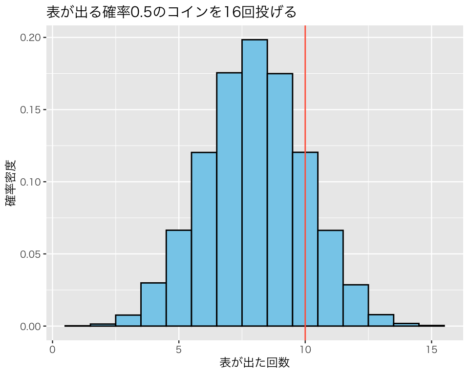
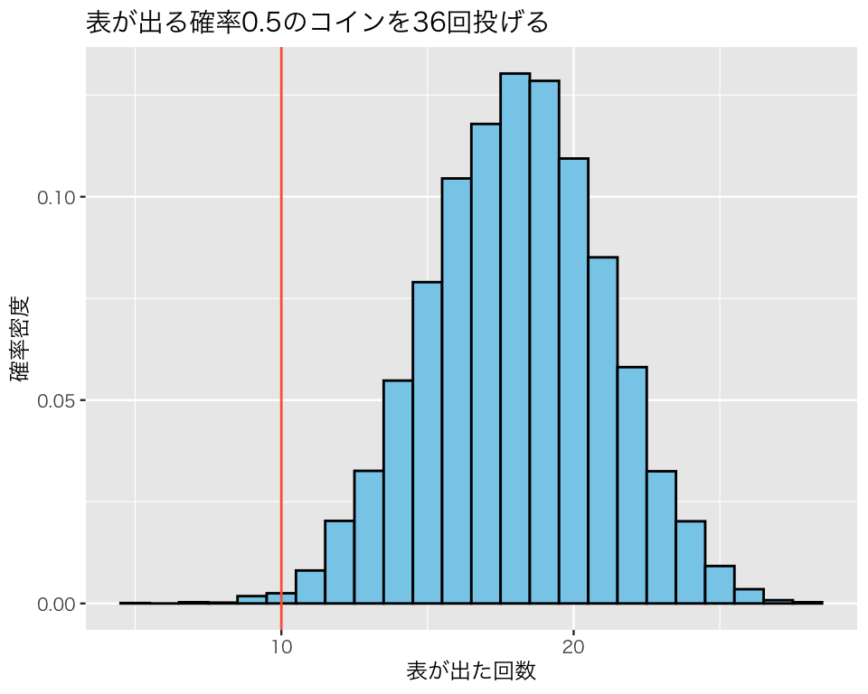

library(tidyverse)
## 図の中で日本語を使えるようにする
## フォントの設定はお好みで
## （Unix/Linux ではIPAexフォントのインストールが必要かも）
if (.Platform$OS.type == "windows") {
my_font <- "Yu Gothic"
} else if (capabilities("aqua")) {
my_font <- "HiraginoSans-W3"
} else {
my_font <- "IPAexGothic"
}
theme_set(theme_gray(base_size = 9,
base_family = my_font))5 統計的推定と仮説検定の基礎
今回の目標
- 推測統計学の目的を理解しよう！
- 統計的検定とは？
- 統計的推定とは？
5.1 パッケージの読み込み
今回利用するパッケージを読み込む。
5.2 例題
問題： 表が出る確率が0.5のコインを \(N\)回投げたところ、10回表が出た。コインを投げた回数\(N\)はいくつ？
- 私たちが観察したこと（データ）：「表が10回」
- 私たちが知りたい数（母数, パラメタ, parameter）：\(N\)
Note
この例題は、小島寛之 (2006)『完全独習 統計学入門』（ダイヤモンド社）の第9講からとった。詳細な解説については小島 (2006: 90-106) を参照されたい。
5.3 準備：二項分布（復習）
前のトピックで学習したとおり、コイン投げの結果は二項分布を利用して考えることができる。
たとえば、「表が出る確率が0.45のコインを10回投げる」という実験を7回実行するには次のようにする。
rbinom(n = 7, size = 10, prob = 0.45)[1] 3 3 1 2 3 2 75.4 統計的仮説検定の基礎
上で出された例題について、以下の2つの仮説を考えよう。
- 仮説 1： \(N＝16\)
- 仮説 2： \(N＝36\)
5.4.1 仮説1 (\(N=16\)) が正しいと仮定する
仮説1が正しいとすると、1回のコイン投げ実験はrbinom(n = 1, size = 16, prob = 0.5) で表されるはずである（問題で設定した\(N\)は、rbinom()関数では size である。nではないので注意！）。例題では、たまたま10回表が出たということになる。 試してみよう。
rbinom(n = 1, size = 16, prob = 0.5)[1] 6表は何回出ただろうか？
もう1度試してみよう。
rbinom(n = 1, size = 16, prob = 0.5)[1] 10表は何回出ただろうか？
1回ずつ結果を出すと面倒なので、まとめて10,000回この実験を実施し、結果をresult1という名前で保存してみよう。
result1 <- rbinom(n = 10000, size = 16, prob = 0.5)上の関数をRStudio で実行すると、右下（あるいは右上）の “Environment” タブの “Values” という列に result1が表示されるはずである。そして、その横に int [1:10000] と書かれているはずである。これは、result1の中身を示しており、int というのは整数 (integer) のことで、[1:10000] というのは、1個目から10,000個目まで数がある（つまり、「A : B」は「AからBまでの整数」という意味）ことを示している。「コインを16回投げる」という実験を実際に10,000回繰り返し、その結果を手で書いて記録するのはものすごく大変だが、Rを使えば同様の実験をほんの数秒で実施できてしまう。
この結果を詳しく検討しよう。まず、表が出る回数の平均値 (mean) はいくつだろうか。
mean(result1)[1] 8.0216平均すると 8.0216回表が出たことがわかった。理論値である \(16 \cdot 0.5 = 8\) に近い値である。
分散 (variance) と標準偏差 (standard deviation) はいくつだろうか。
分散の理論値は \(16\cdot 0.5 (1 - 0.5) = 4\)、標準偏差の理論値は\(\sqrt{4} = 2\) だから、どちらもほぼ理論値どおりの値である。
この実験結果をヒストグラムにしてみよう。 縦軸を確率密度 (probability density) にするために、y = after_stat(density) を指定する。
df1 <- tibble(x = result1)
hist1 <- ggplot(df1, aes(x = x, y = after_stat(density))) +
geom_histogram(color = "black",
fill = "skyblue",
binwidth = 1) +
labs(x = "表が出た回数",
y = "確率密度",
title = "表が出る確率0.5のコインを16回投げる")
plot(hist1)
例題で得られた「表が10回」という結果は、このヒストグラムのどの辺りにあるだろうか。これをgeom_vline()で加えてみよう。
hist2 <- hist1 +
geom_vline(xintercept = 10,
color = "tomato")
plot(hist2)
このヒストグラムの形状に注目してみると、なんとなく正規分布に似ているように見える。そこで、先ほど計算した平均値と標準偏差（分散）を利用して、平均が 8.0216で標準偏差が1.9759868の正規分布を、このヒストグラムに重ねて描いてみよう。

この図からわかるとおり、二項分布から得られたヒストグラムの形は、正規分布によく似ている（こういう状況を、「正規分布で近似できる」という）。
私たちが実験で手に入れたデータ (result1) のヒストグラムが正規分布に似ていることがわかったので、正規分布の特徴を（統計学1の内容から）思い出して使ってみよう。正規分布の特徴から、平均\(\pm\) 2標準偏差の間にデータの約95%があるはずである。 したがって、仮説1 (\(N=16\)) が正しいとすれば、表が出る回数の95%は、
と
の間にあるはずだ。
念のため、正規分布に頼らずに私たの実験結果からも同じことを確かめてみよう。私たちは実験を10,000回繰り返した。実験の結果として得られた10,000個の数を、小さい順に並べ替えてみよう。小さい順の並べ替えは、sort()で行う。
result1_sorted <- sort(result1)この並べ替えたデータのうち、小さい方から2.5%（つまり１番小さい数から250番目に小さい数まで）と大きい方から2.5%（つまり、9751番目に小さい数から10,000番目に小さい数、言い換えると、１番大きい数から250番目に大きい数）を取り除くと、平均に近い95%のデータを残すことができる。つまり、10,000回の実験結果を小さい順に並べ替えたとき、251番目から9750番目までの数が、平均周りの95%になる。
Rで単純な数の集まり（ベクトル, ヴェクタ [vector] と呼ぶ）から特定の位置にあるものを抜き出すときは[] を使う。Aという変数の3番目の要素を取り出したいときはA[3]と書き、5番目から8番目までを取り出したいときは、A[5:8] と書く。
私たちが知りたいのは、result1_sorted（実験結果を小さい順に並べ替えたもの）の251番目と9750番目である。
result1_sorted[251][1] 4result1_sorted[9750][1] 12つまり、データの95%は、4 と12 の間にある。これは正規分布を利用して求めた数と（ほぼ）同じである。
小さい順に並べ替えた後、特定のパーセンテージの位置にある数は、Rのquantile() を使えば、もっと簡単に求められる。私たちが知りたいのは、下から2.5% (0.025) と97.5% (0.975) の位置なので、次のようにする。
quantile(result1, prob = 0.025)2.5%
4 quantile(result1, prob = 0.975)97.5%
12 #quantile(result1, prob = c(0.025, 0.975)) # 2つの値を1度に求めたいときこのように、わざわざ小さい順に並べ替えたり2.5%と97.5%は何番目の数かを考えたりしなくても、quantile() を使えば簡単に答えが求められる。
いずれの方法を使っても、仮にコイン投げの回数が16回（仮説1）だとすれば、例題の観測値として得られた「10回」という回数は、平均周りの95%の範囲に含まれている。つまり、「16回コインを投げて10回表が出る」という現象は、特に珍しいわけではない。よって、\(N=16\)という仮説を否定するような証拠はないと考えられる。仮説1はとりあえず保留しておこう。
5.4.2 仮説2 (\(N=36\)) が正しいと仮定する
仮説2が正しいとすると、1回のコイン投げ実験はrbinom(n = 1, size = 36, prob = 0.5) で表されるはずである。例題では、たまたま10回表が出たということになる。 試してみよう。
rbinom(n = 1, size = 36, prob = 0.5)[1] 18表は何回出ただろうか？
もう1度試してみよう。
rbinom(n = 1, size = 36, prob = 0.5)[1] 19表は何回出ただろうか？
先ほどと同様にこの実験をまとめて10,000回実施し、結果をresult2という名前で保存してみよう。
result2 <- rbinom(n = 10000, size = 36, prob = 0.5)この結果を詳しく検討してみよう。 まず、表が出る回数の平均値はいくつだろうか。
mean(result2)[1] 18.02平均すると 18.02回表が出たことがわかった。
分散と標準偏差はいくつだろうか。
結果をヒストグラムにしてみよう。
df3 <- tibble(x = result2)
hist4 <- ggplot(df3, aes(x = x, y = after_stat(density))) +
geom_histogram(color = "black",
fill = "skyblue",
binwidth = 1) +
labs(x = "表が出た回数",
y = "確率密度",
title = "表が出る確率0.5のコインを36回投げる") +
geom_vline(xintercept = 10,
color = "tomato")
plot(hist4)
例題で得られた「表が10回」という結果は、このヒストグラムのどの辺りにあるだろうか。
このヒストグラムの形状に注目してみると、なんとなく正規分布に似ているように見える。そこで、先ほど計算して平均値と標準偏差（分散）を利用して、平均が 18.02で標準偏差が2.9787056の正規分布を、このヒストグラムに重ねて描いてみよう。

先ほどと同様、二項分布から得られたヒストグラムは正規分布によく似ている。
私たちが実験で手に入れたデータ (result2) のヒストグラムが正規分布に似ていることがわかったので、正規分布の特徴から平均\(\pm\) 2標準偏差の間にデータの約95%があるはずである。 したがって、仮説2 (\(N=36\)) が正しいとすれば、表が出る回数の95%は、
と
の間にあるはずだ。
念のため、正規分布に頼らずに私たの実験結果からも同じことを確かめてみると
quantile(result2, prob = 0.025)2.5%
12 quantile(result2, prob = 0.975)97.5%
24 #quantile(result2, prob = c(0.025, 0.975)) # 1行で求めたいときとなり、（ほぼ）同じ結果が得られる。
いずれの方法を使っても、仮にコイン投げの回数が36回（仮説2）だとすれば、例題の観測値として得られた「10回」という回数は、平均周りの95%の範囲に含まれていない。つまり、「36回コインを投げて10回表が出る」という現象は、とても珍しい現象であり、あまり起こることは期待されない。これは、\(N=36\)という仮説を否定するような証拠と考えられるので、\(N=36\)という仮説は棄却 (reject) する。
5.5 統計的推定の基礎
仮説検定の方法を使えば、1つひとつの仮説について、その説がおかしいと言える証拠があるかどうか確かめることができる。しかし、理論的に可能な仮説はたくさん存在しており、1つひとつ確かめるのは少し面倒だ。私たちが考えている例題の場合、10以上の整数であれば、どんな数でも可能である（\(N=36\) が仮説として妥当でないとわかった時点で、37以上の数は無視できるが）。
そこで、そもそも \(N\) はいくつなのかということ自体を直接考えるのが、統計的推定 (statistical estimation) である。
5.5.1 点推定 (point estimation)
ある特定の分布で、もっとも起こりそうな結果は何だろうか？
例として、「試行回数5で、成功確率0.4の二項分布」を考えよう。 この分布は以下のような形をしている。

この図をみて、どんな結果がもっとも起こりやすそうだと考えられるだろうか。図からは、成功回数2回がもっとも起こりやすそうだということがわかる。 また、この分布の平均値は、\(5 \cdot 0.4 = 2\) である。
これらの知識を利用すると、二項分布では平均値がもっとも起こりやすそうである（自習課題：他の値をパラメタ（母数）にもつ二項分布でもそう言えるか自分で確かめよ）。
この知識を利用して私たちの例題について考えてみよう。 私たちは試行回数 \(N\) を知りたいが、どんな試行回数であっても、もっとも起こりやすいのは平均値だとする。そうすると、10回表が出たということから、平均値が10になるような二項分布を探せばよいことになる。成功確率は0.5だとわかっているので、この関係を式にすると、 \[ N \cdot 0.5 = 10 \] となる。この式を解くと、 \(N = 20\) となる。つまり、「試行回数20で成功確率の0.5の二項分布の平均値が10である」ということがわかる。この平均値が私たちのデータに合致するので、私たちは、「\(N=20\)」 という推定を行う。このようにして得られた、1つの数をピンポイントで示す推定法を点推定 (point estimation) と呼び、得られた値（20）を点推定値 (point estimate) と呼ぶ。
私たちの例題の点推定値は20である。
5.5.2 区間推定 (interval estimation)
上で1つの値を推定したが、私たちが推定を行うとき、その推定にどれくらい自信があるか（より正確には、どれくらい自信がないか）は問題によって違う。推定値が同じ10でも、「絶対10だ」というのと「だいたい10くらいだろう」というのでは、答えの意味は異なる。そこで、この「推定に対する自信のなさ (uncertainty)」を推定の方法に取り込んだのが、区間推定 (interval estimation) と呼ばれる方法である。
より具体的には、統計的仮説検定で棄却されない仮説の集合を、区間推定に使う。私たちは、\(N=36\)という仮説（仮説2）を棄却した。したがって、\(N=36\) は区間推定には使わない。他方、\(N=16\) という仮説は棄却しなかった（保留した）ので、\(N=16\) は区間推定の一部として使う。\(N=36\) が仮説として妥当でないことがわかっているので、\(N=10, 11, \dots, 35\) について、仮説が棄却できるかどうか確かめればよい。
しかし、上の仮説検定で実行したことを何度も何度も繰り返すのは、やや面倒である。そこで、実験のための関数を自分で作ってしまおう。関数の作り方はまだ理解しなくてもいいので、こんなことができるということを体験して欲しい。Rで自分の関数を作るには、function() を使う（つまり、「関数」という名前の関数で新たな関数を作る）。
上のコマンドは関数を定義しただけなので、実行しても何も起きない。ただし、RStudio では右下（または右上）の “Environment” タブの中に、“Functions（関数）” という項目が追加され、そこに定義した bin_exp が表示されているはずである。
この関数を使ってみよう。先ほど試した仮説1 (\(N=16\)) を検証するには、次のようにする。
bin_exp(16) 2.5% 97.5%
4 12 先ほどと（ほぼ）同じ結果が得られた。データである10はこの2つの数値の間にあるので、仮説1は保留する。
実験の繰り返し回数を変更し、5000回にすると、
bin_exp(16, trials = 5000) 2.5% 97.5%
4 12 となる。
同様に、仮説2 (\(N=36\)) は、
bin_exp(36) 2.5% 97.5%
12 24 となり、データである10はこの2つの数値の間にはないので、仮説2を棄却する。
この関数を使えば比較的簡単に10以上、35以下のすべての数について仮説を棄却すべきかどうか確かめられる。1つ1つの値を順番に検証してもいいが、一気に実行するには次のようにする。
10 11 12 13 14 15 16 17 18 19 20 21 22 23 24 25 26 27 28 29 30 31 32 33
2.5% 2 2 3 3 3 4 4 5 5 5 6 6 6 7 7 8 8 9 9 9 10 10 11 11
97.5% 8 9 9 10 11 11 12 12 13 14 14 15 15 16 17 17 18 19 19 20 20 21 21 22
34 35
2.5% 11 12
97.5% 23 23sapply() の意味を理解するのが難しければ、for ループを使ってもよい。
10 : 2 8
11 : 2 9
12 : 3 9
13 : 3 10
14 : 3 11
15 : 4 11
16 : 4 12
17 : 5 12
18 : 5 13
19 : 5 14
20 : 6 14
21 : 6 15
22 : 6 15
23 : 7 16
24 : 7 17
25 : 8 17
26 : 8 18
27 : 9 19
28 : 9 19
29 : 9 20
30 : 10 20
31 : 10 21
32 : 11 21
33 : 11 22
34 : 11 23
35 : 12 23 \(N\)が10から12の間と32以上の場合にはデータである10が2つの数値の間にないことがわかるので、これらの仮説は棄却する。よって、「\(N\)は13以上31以下の整数である」と答えるのが、区間推定である。